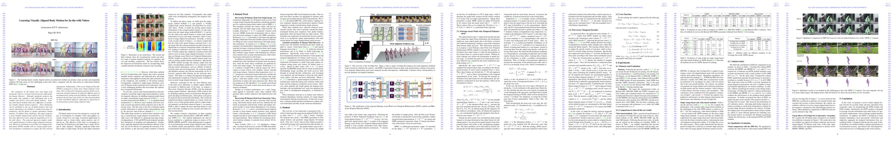

The estimation of 3D human pose and shape from monocular video is a critical research area for understanding human behavior. Although significant progress has been made, this problem is still challenging due to the complex and diverse real-world human motions. Existing video-based methods often face difficulties in producing visually aligned motion sequences. These limitations can be attributed to the use of global features that lack motion information, the inability to model long-range dependencies, and the failure to capture informative human motions. To address these challenges, this paper proposes a novel Visually Aligned body motion Network (VisAlign-Net) that effectively learns temporal dependencies for in-the-wild videos. The proposed approach employs multi-scale spatial features to achieve image-aligned reconstruction. Moreover, an Entropy-aware Point-wise Temporal Enhancement (EPTE) module with an entropy-guided attention mechanism is introduced to capture the most relevant information. Additionally, a PArt-aware Temporal Encoder (PATE) is proposed to ensure more robust temporal continuity. This is achieved by designing separate motion reconstructions through temporal encoding for different parts of the human body, giving each part full play. Our method outperforms the previous state-of-the-art video-based methods on three benchmark datasets, indicating its superiority in reconstructing accurate image-aligned results.

[PyMAF] Zhang, Hongwen and Tian, Yating and Zhou, Xinchi and Ouyang, Wanli and Liu, Yebin and Wang, Limin and Sun, Zhenan, PyMAF: 3D Human Pose and Shape Regression with Pyramidal Mesh Alignment Feedback Loop, in ICCV 2021
[VIBE] Muhammed Kocabas, Nikos Athanasiou, Michael J. Black, VIBE: Video Inference for Human Body Pose and Shape Estimation, in CVPR 2020
[TCMR] Choi, Hongsuk and Moon, Gyeongsik and Chang, Ju Yong and Lee, Kyoung Mu, Beyond Static Features for Temporally Consistent 3D Human Pose and Shape from a Video, in CVPR 2021
[MPS-Net] Wen-Li Wei, Jen-Chun Lin, Tyng-Luh Liu, Hong-Yuan Mark Liao, Capturing Humans in Motion: Temporal-Attentive 3D Human Pose and Shape Estimation from Monocular Video, in CVPR 2022